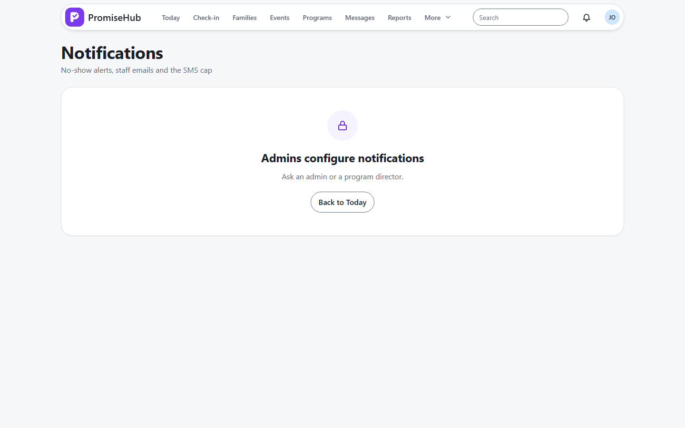
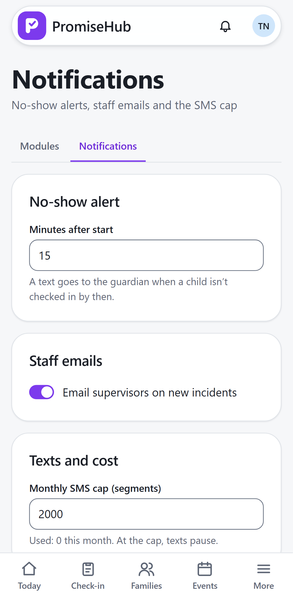

PromiseHub · Video 36
Configure notifications
Each organization's own rhythm for alerts and texts
Each organization's own rhythm for alerts and texts
A cap below what's used is refused.


| Case | Answer |
|---|---|
| Delay 10 minutes | Text goes sooner |
| Supervisor emails off | No email, notice still arrives |
| Site lead | 403 |
| Another organization | Its own defaults |
Next: produce grant reports